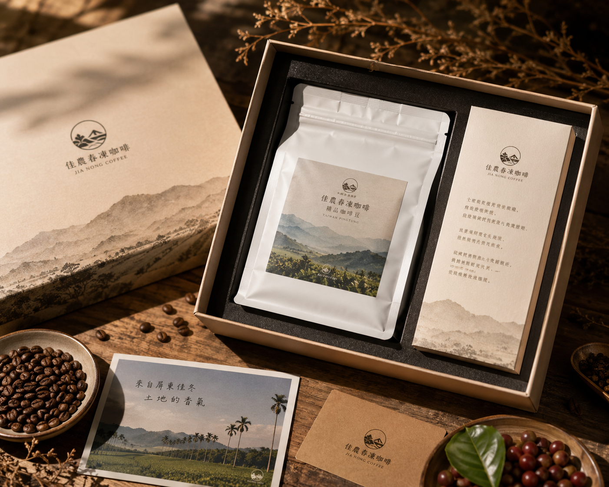

🌾 地方創生 × 禮盒攝影
縱谷米選
以稻田、米穗、禮盒與產地感，呈現「土地心意」與送禮價值。
- 攝影風格：自然產地風
- 光線重點：明亮自然光
- 適合用途：電商主圖、LINE團購圖、品牌官網
AI Agri Product Photographer
PRODUCT PHOTO × BRAND IMAGE × AI PROMPT
從商品名稱、產地、特色與品牌風格出發，自動產生電商主圖、 情境攝影、社群貼文、禮盒攝影與食農教育攝影 Prompt。
PHOTO CASE STUDY
同樣是農產品，不同品牌定位與攝影風格， 會創造完全不同的市場價值與商品印象。
以稻田、米穗、禮盒與產地感，呈現「土地心意」與送禮價值。

用深色木桌、咖啡豆、禮盒與暖光，塑造精品咖啡的質感。

以黑金包裝、茶湯、茶葉與石材背景，呈現高端伴手禮形象。

結合新鮮芒果、芒果乾、產地看板與山海背景，強化屏東產地故事。
SCENARIO CARDS
先從案例開始，再讓學生修改商品、產地與風格，觀察攝影定位如何改變。
PHOTO INPUT
少輸入、多推演、重理解：讓學生從資料看懂攝影行銷邏輯。
AI SIMULATION LEARNING
看懂商品、光線、背景與構圖差異。
理解照片如何影響品牌質感與購買意願。
將攝影成果轉化為電商圖片與社群素材。